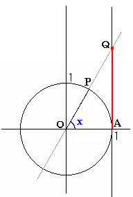

|
The figure shows a definition of tangent function. The unit circle is the circle with its center at the origin and a radius of 1. Angle x is formed by rotating OA about the origin to OP. Point Q is the intersection of line OP and x=1. Then the y-coordinate of point Q is tan x. |  |
| Input an angle (degrees), then press enter key or click "Start" button. |